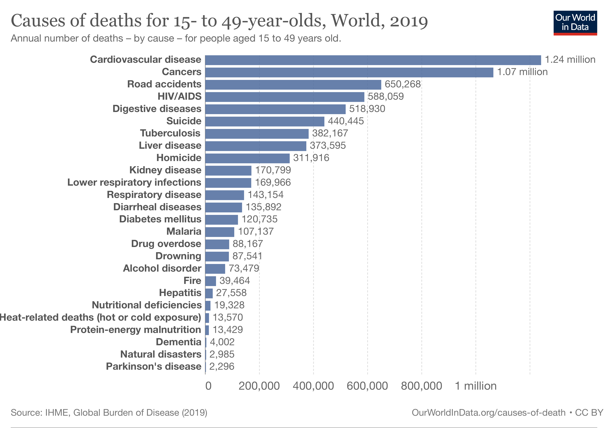

Artificial Intelligence is becoming increasingly prevalent in society with cars adapting many features of what a fully self-sufficient self-driving car would have. Self-driving cars have many safety benefits and are an inclusive way to get from place to place. With companies such as Tesla, Apple, and Uber making huge investments in this market, it is likely we will have fully self-sufficient self-driving cars on the roads in the near future (Baecker, 2019).
The World Health Organization [WHO] (2022) estimates 1.3 million people die each year from road traffic injuries. WHO states that the leading cause of deaths in 5-29 year olds is road traffic injuries. This is comparable to research by Ritchie et al. (2018) who found road traffic injuries to be the third leading cause of death in 15-49 year olds. 94% of all traffic crashes in the United States in 2015 were thought to have been caused by human error and human error accounted for 75% of traffic crashes in the United Kingdom in 2017 (as cited in Liu et al., 2019). With the number of road casualties being so high, something needs to change!
Factors like speeding, drink driving, and distracted driving all increase a person's crash risk. WHO (2022) claims there is a 4% increase in risk of a fatal crash for every 1% increase in mean speed. They claim that those using mobile phones while driving are 4 times more likely to crash than those not using their mobile phones. Driving under the influence of amphetamines increases a persons risk of a fatal crash by approximately 5 times. These factors could all be prevented. Self-driving cars could be safer in this aspect than human drivers.
Made 24 May 2023thanks to W3C for tutorial and adapted code from Style Examples
also thanks to WDN for HTML and CSS resources and any adapted code snippets from Mozilla Developer Network